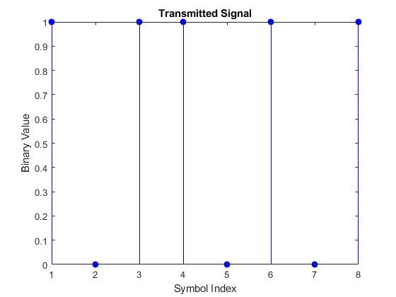
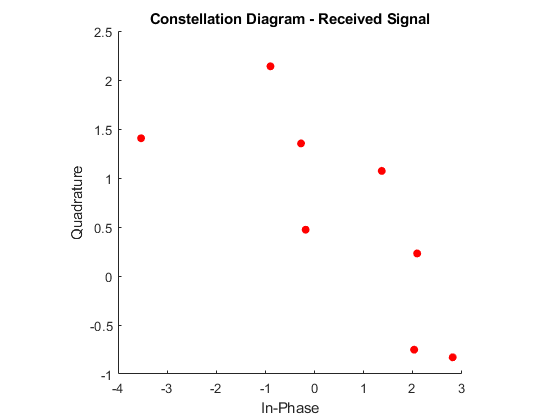
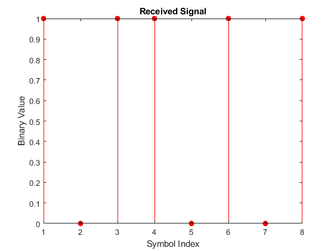
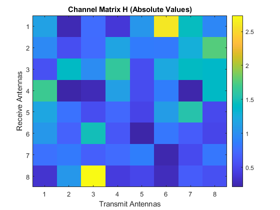
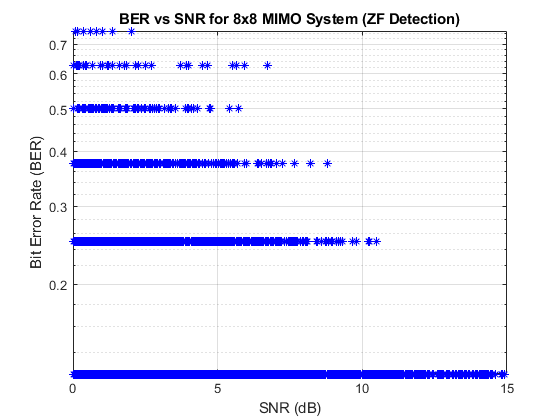

Nt = 8;
Nr = 8;
txSignal = randi([0, 1], Nt, 1);
H = (randn(Nr, Nt) + 1i * randn(Nr, Nt)) / sqrt(2);
noise = (randn(Nr, 1) + 1i * randn(Nr, 1)) * 0.01;
s = 2*txSignal - 1;
y = H * s + noise;
sHat = (H'*H)\(H'*y);
decodedSignal = real(sHat) > 0;
errors = sum(txSignal ~= decodedSignal);
ber = errors / Nt;
disp("Transmitted Signal:");
disp(txSignal');
disp("Decoded Signal:");
disp(decodedSignal');
disp("Bit Error Rate (BER):");
disp(ber);
snr = 10 * log10(sum(abs(txSignal).^2) / sum(abs(noise).^2));
disp("Signal-to-Noise Ratio (SNR) in dB:");
disp(snr);
figure;
stem(txSignal, 'b', 'filled');
title('Transmitted Signal');
xlabel('Symbol Index');
ylabel('Binary Value');
rxSignalSM = H * txSignal + noise;
figure;
scatter(real(rxSignalSM), imag(rxSignalSM), 'r', 'filled');
title('Constellation Diagram - Received Signal');
xlabel('In-Phase');
ylabel('Quadrature');
axis square;
figure;
stem(decodedSignal, 'r', 'filled');
title('Received Signal');
xlabel('Symbol Index');
ylabel('Binary Value');
figure;
imagesc(abs(H));
colorbar;
title('Channel Matrix H (Absolute Values)');
xlabel('Transmit Antennas');
ylabel('Receive Antennas');
SNR_range = 0:0.001:15;
BER = zeros(1, length(SNR_range));
signalPower = var(s);
for i = 1:length(SNR_range)
SNR_linear = 10^(SNR_range(i) / 10);
noiseVar = signalPower / SNR_linear;
noise = sqrt(noiseVar / 2) * (randn(Nr, 1) + 1i * randn(Nr, 1));
y = H * s + noise;
sHat = (H'*H)\(H'*y);
decodedSignal = real(sHat) > 0;
errors = sum(txSignal ~= decodedSignal);
BER(i) = errors / Nt;
end
figure;
semilogy(SNR_range, BER, 'b*');
grid on;
title('BER vs SNR for 8x8 MIMO System (ZF Detection)');
xlabel('SNR (dB)');
ylabel('Bit Error Rate (BER)');
spectral_efficiency = min(Nt, Nr);
disp("Spectral Efficiency (in bits/s/Hz):");
disp(spectral_efficiency);
Transmitted Signal:
1 0 1 1 0 1 0 1
Decoded Signal:
1 0 1 1 0 1 0 1
Bit Error Rate (BER):
0
Signal-to-Noise Ratio (SNR) in dB:
35.7057
Spectral Efficiency (in bits/s/Hz):
8
    